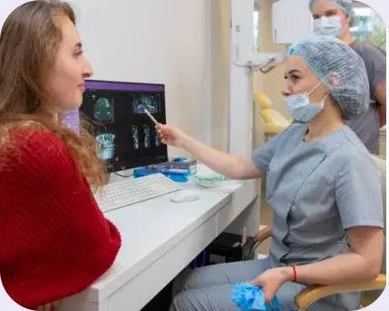

до
до после
послеНиколай
- Задача
- Зубы разрушены, часть отсутствует, жевать невозможно.
- Решение
- Удаление, имплантация Osstem, несъёмный протез с коронками из циркония.
- Система
- Импланты Osstem®, коронки из диоксида циркония
Постоянные зубы
за 1 день по технологии
All‑on‑4

План работ и финальная стоимость — в договоре
Снимки до операции и в день сдачи протеза. Потяните ползунок, чтобы сравнить, и переключите ракурс под фотографией.


Фотографии опубликованы с согласия пациентов. Результат индивидуален и зависит от клинической ситуации. Рейтинги сети All Smiles на 02.10.2026.
Пакет 189 000 ₽ за челюсть в рассрочку от клиники на 36 месяцев без переплат. Импланты и несъёмный протез — в день операции.
допосле до
до после
после до
до после
после до
до после
послеФотографии и описания — с сайта клиники. Результат индивидуален и зависит от клинической ситуации.

Операцию проводим под седацией: вы спите, а не терпите. Это не наркоз — препараты мягче, пробуждение спокойное. На консультации разберём ваши опасения и подберём вариант обезболивания.
Обсудить лечение во сне →Протез с опорой на импланты не двигается и не натирает. Нагрузку увеличиваем постепенно, по рекомендациям врача, — но яблоко и стейк возвращаются в меню.
Без зубов кость убывает, губы западают, нижняя треть лица «садится». Протез возвращает поддержку мягким тканям и высоту прикуса — лицо выглядит собраннее.
Клиника работает по стандартам СтАР. Главный врач сети участвовал в организации четырёх инновационных центров стоматологии СтАР и входит в правление Ассоциации развития инновационной стоматологии.
Возможности протезирования, сроки адаптации и ожидаемые изменения внешности врач оценивает после диагностики.
Сначала понятный план и общая стоимость, потом — удобный график. Рассрочку даёт клиника, кредит — банки‑партнёры. Решение по кредиту принимает банк.
Сначала выясняем, какие зубы можно сохранить. Полную замену предлагаем, только если сохранять нечего.
Возможны лечение и сохранение своих зубов · одиночные импланты · мостовидные и съёмные протезы по показаниям.
Разобрать мой случай1 / 4
Цена пакета за одну челюсть: 4 импланта, адаптационный протез, анестезия и материалы. Постоянный протез рассчитывается отдельно. Osstem — 319 000 ₽ (по запросу). Стоимость пакета с Nobel Biocare рассчитывает врач после диагностики.

Форму и оттенок подбираем под тип лица, цвет кожи и возраст. Диагностика, согласование, примерка — отдельные шаги плана, и на каждом можно что‑то поменять.

Шкала VITA, фото нашей пациентки. Финальный оттенок подбирает врач вместе с вами на примерке.

Снимок, разбор на экране и три плана лечения от трёх специалистов. Для вас — 0 ₽ вместо 7 000 ₽.

Протез проектируем по CAD/CAM, форму и цвет согласуем до начала работ.

Кобальт‑хромовая балка внутри протеза держит нагрузку, конструкция не требует подгонки.
Разберём чужой план по пунктам: что действительно нужно, что лишнее, где спрятаны доплаты. Ответим понятным языком и пришлём свой расчёт.
До начала лечения согласуем план, стоимость и обязательства клиники. Всё — в договоре и приложениях.

Доктор медицинских наук, профессор. Стаж более 30 лет.
Окончил МГМСУ им. Семашко (1996), ординатура ЦНИИС (1997–1999). Профессор кафедры стоматологии МИНО, академик Российской академии естествознания. Участвовал в открытии четырёх инновационных центров стоматологии СтАР, член правления Ассоциации развития инновационной стоматологии.

Протезирование на имплантах, лечение зубов.

Имплантация, удаление зубов, сложные случаи.

Протезирование, лечение зубов.

Имплантация, удаление зубов.
После диагностики и выбора конструкции. В плане отдельно считаем подготовку, хирургию, адаптационный и постоянный протезы. Сравнивая клиники, сравнивайте состав работ и число челюстей.
Нет. За день ставим импланты и адаптационный протез. Дальше — восстановление, осмотры и постоянное протезирование по плану.
Адаптационная и постоянная конструкции — разные этапы. В общем бюджете отдельно указываем материал, стоимость и срок изготовления постоянного протеза, чтобы не было сюрпризов.
Нет. Возможны лечение и сохранение своих зубов, отдельные импланты, мостовидные или съёмные конструкции. Вариант выбираем после осмотра и КТ.
Нет. Оцениваем прогноз каждого зуба; сохраняем всё, что можно сохранить.
Адаптационный — лёгкий, на период приживления. Постоянный делаем позже с учётом тканей, прикуса и выбранного материала.
Возможны болезненность и отёк — это нормально. Дадим схему обезболивания и ухода, будем на связи.
Нет. В период адаптации есть ограничения; темп увеличения нагрузки определяет врач.
Прийти на осмотр. Не подпиливать самим и не терпеть — коррекция входит в сопровождение.
Несъёмный протез на имплантах не снимается. Нужны ежедневная гигиена и профосмотры по графику.


Адрес — Москва, Ленинградский проспект, д. 36, стр. 40 (2 минуты от м. Динамо) · Ежедневно 9:00–21:00 · +7 (495) 065-00-77
«На консультации разберём вашу ситуацию, покажем варианты и назовём цену. Без давления».
Администратор свяжется и подберёт время. Приём ежедневно с 9:00 до 21:00.